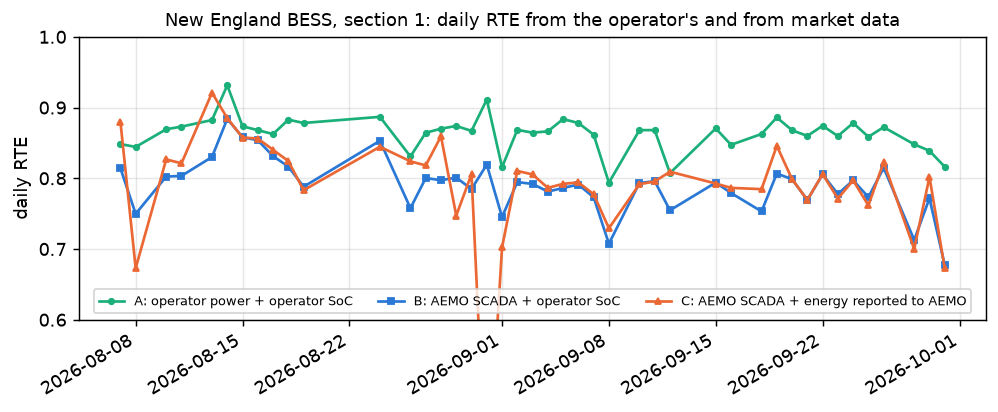

Is the battery doing what its warranty and LTSA promise?
Monthly checks of round-trip efficiency, availability, cycling and capacity for an operating grid battery, verified on a battery with a known truth and run on every grid battery in Australia's NEM.
0.92 vs 0.82median conversion efficiency against round-trip efficiency at the meter, 55 NEM batteries
7.3 ppdaily RTE gap between the operator's own meter and the market SCADA point at one battery
95.8 % vs 78.1 %median technical against offered availability, 38 batteries in service

New England BESS, section 1: daily RTE from the operator's own data (A) and from market data (B, C). The gap between A and B is the metering point.
The problem
Once a battery is built, the asset manager's question changes from what it can earn to whether it does what the contracts promise: round-trip efficiency, availability, cycles, operating limits and usable capacity, against the supplier's warranty and the long-term service agreement (LTSA).
Each of these numbers depends on where it is metered, over which window and how events are treated. A figure from market data measures something different from what a contract tests.
Data and method
Input and output: a generic long table from any EMS or SCADA, with the site, warranty and LTSA terms in YAML; a monthly report in Excel and HTML.
Estimators: round-trip efficiency corrected for the change of state of charge, with and without auxiliaries; LTSA time-, capacity- and energy-based availability with event treatments; rainflow cycles and warranty-limit violations; capacity tests with measurement uncertainty and a guard band.
Verification on a synthetic 50 MW / 100 MWh battery: two years of 15-minute data exported like a real EMS (kW, two PCS and BMS blocks, local time with DST), with known efficiencies, auxiliaries, outages and fade.
Benchmark on AEMO data for every grid battery in the NEM (October 2025 to September 2026), checked against the 5-minute power and state of charge that ACEN publishes for its New England BESS.
Result
On the synthetic battery the RTE without auxiliaries is recovered exactly (0.91298), availability exactly including the DST days, and every injected warranty violation is found and nothing else. The SoC correction makes daily RTE usable: uncorrected, daily values spread over 2.8 pp; corrected, 90 % of days are within 0.25 pp of the truth.
Auxiliaries decide the RTE guarantee. Including them, the same battery reaches 0.859-0.865 a year, but its winter months fall to 0.831-0.841 because of heating, below an illustrative 85 % monthly guarantee.
With class 0.2S metering the expanded uncertainty of a capacity test is 0.7-1.4 MWh, more than the first two tests' margin over the guaranteed curve (0.6 and 1.0 MWh). Their verdict is inconclusive, not pass.
Across 55 NEM batteries (8.9 GW / 20.3 GWh) the RTE at the SCADA point has a median of 0.82 (interquartile range 0.78-0.85) and grows with duration, while the conversion efficiency is about 0.92 for all of them: the difference is standby losses and auxiliaries seen at the connection point.
At New England BESS the daily RTE is 0.868 from the operator's own meter and state of charge, and 0.794 from AEMO SCADA with the same state of charge. The metering point accounts for 7.3 pp, the source of the stored energy for 3.1 pp (mean absolute daily differences).
Declared physical availability (PASA, counted like an LTSA capacity formula) has a median of 95.8 % for the 38 batteries in service for at least six months; 15 of them reach an illustrative 97 % guarantee. Offered availability is 78.1 %: what is held back is commercial, for example capacity reserved under other contracts, not technical.
NEM batteries, October 2025 to September 2026: round-trip efficiency by duration
Duration
Batteries
RTE at the SCADA point, median (range)
Conversion RTE
About 1 h
7
0.75 (0.47-0.81)
0.919
About 2 h
41
0.83 (0.74-0.86)
0.924
3 h or more
5
0.88 (0.87-0.90)
0.925
Conversion RTE from the hourly regression of reported stored energy in the companion project bess-soc-soh-degradation, which separates a standby drain.
What it means for a decision
Before comparing an RTE with a guarantee, check where it is measured and whether the auxiliaries are inside. An RTE from revenue-meter or market data includes auxiliaries and standby; it cannot be compared with one guaranteed at the PCS terminals.
Monthly RTE clauses are tested hardest in winter. Heating can take an otherwise compliant battery below the guarantee.
Read capacity tests with their uncertainty. Early tests close to the guaranteed curve can be inconclusive rather than a pass, which matters when a claim or an augmentation is planned from them.
Low offered availability in market data is a trading or contract choice, not a fault. The closest public proxy of what an LTSA measures is the declared physical availability, and it is still the operator's own statement.
Limitations
Every contract term (warranty, LTSA, damages) is an illustrative placeholder; real contracts differ in the details that decide money.
Market data has no auxiliary metering behind the connection point, no temperatures, no capacity tests, no outage log and no warranty terms.
The synthetic verification shows that the estimators are consistent with the physics they assume; real batteries add part-load efficiency curves, self-discharge, cell imbalance and SoC drift.
Capacity-test uncertainty covers the instruments and the temperature correction, not the test procedure itself, which can matter more.